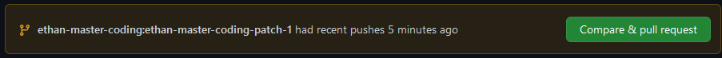

First fork on of our many repositories. Then it is perfered that you make a new branch. Then make what ever changes you would like to make! After go to https://github.com/Coin-Catalog/Repository name. Then click the button that says Compate & pull request¹. Then you have opened your PR! Now dont get to happy yet. Your PR will go throught atleast 1 round of reviews before it is merged into the main branch. The reson you need to stay active is because people may requst changes to be made and you will need to either commit the changes or say why you think that is not a good change and we can discuss it.
¹That button is in this yellow box show in the image below.
